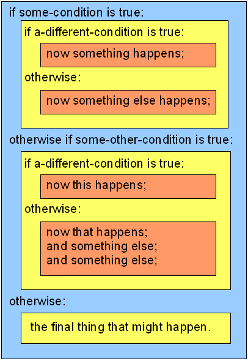

Chapter 9: Phrasing & Punctuation
In this chapter we’re going to look at the guidelines you’ll need to follow when writing your game in the Inform 7 language. Most programmers refer to what they write as “source code.” Writing with Inform refers to what you’ll be writing as the “source text,” but the only reason I can see for using this nonstandard term is to make Inform look less intimidating to the new author. What you’ll be writing will be source code, and that’s the term used in this book. (In fact, calling the code “source text” is potentially confusing, in that Inform has a data type called text, which is only one of the many components of the language.)
If you’ve ever learned a traditional computer programming language, you may be surprised when you first look at the syntax of the Inform language. (“Syntax” is just a fancy word for how things are phrased and punctuated.) At first glance, Inform looks very little like a programming language; it looks like plain written English. Some of the sentences are a little forced, but English syntax is the foundation of Inform.
This is an illusion – artful, but an illusion. Just like any other programming language, Inform has a compiler. And like any other compiler, the Inform compiler absolutely insists that your code be written in certain ways. The “natural language” user interface of Inform is not much more than skin-deep.
The use of “natural language” for programming is both a blessing and a curse. It’s a blessing because if you don’t remember how to do some type of task, you can try writing it exactly the way you’d phrase it if you were speaking to a friend. Sometimes you’ll find the right phrase that way. Or not. Many phrases that are understood without trouble by native speakers of English are not understood by Inform. Sometimes there are three or four different ways to express a given concept that for a native English speaker would mean exactly the same thing, so you’re pretty much guaranteed to hit the target before very long. At other times, syntax that you might naturally expect to work, won’t, and you’ll have to hunt around in the Documentation to find the correct syntax.
A second surprise, for expert programmers, may come from the sheer number of phrase constructions that are both allowed and needed by Inform. Inform is a language that’s rich in features. As you write interactive fiction, you’ll be dealing with innumerable specifics – odd connections between rooms, objects that need to behave in unexpected ways, in-game error messages that need to be customized due to the nature of the story, and so on. Interactive fiction is a mass of particulars; generalizations are hard to come by, and even harder to nail down. But let’s give it a shot.
Types of Source Text
There are three main kinds of writing in Inform. First, some of your writing will be between double quotation marks, “Like this.” There are two types of things that you put between quotation marks: what you want your game to print out to the computer screen (at some point or other) when the game is played, and words and phrases that you want Inform to understand when the player types them. Here’s a quick example that shows both of these types:
The sentence following “The description is” is output text. This is what the Inform game interpreter will print out in response to EXAMINE THE WILL. The words after “Understand” are different: They’re extra vocabulary words for the object whose main name is “will”. The word “will” can be used both by the player of the game when referring to this object, and by the author. However, only the player can call it a “document” or a “piece of paper.”
The function of Understand rules is sometimes a bit difficult for new Inform authors to grasp, so let’s expand on the idea a bit. If you’ve used the code above to create an object called the will, you can only refer to it in your source code as “the will” (or just “will”). You can’t write rules such as this:
Why not? Because the compiler doesn’t know that this object can be called “legal document.” In your source code, it’s important always to refer to an object using the word or words you used to create it. A little later in this chapter, we’ll look at a gray area that affects this concept, but it’s an important concept to get straight. If you forget what you called an object, you can even end up creating a second object with almost the same name, which can lead to hard-to-find bugs in your code.
The second type of thing you’ll write will be comments. Words and sentences that are not between quotation marks but are instead surrounded by square brackets, [Like this], are comments. When your game is compiled, the comments will be ignored. Adding comments to your code is highly recommended! A comment is a memo you write to yourself, in order to take notes about things you still need to add to the story or so that you’ll remember, six months from now, why your code is constructed in a certain way.
As explained below in the section “Text Insertions,” however, square brackets have a completely different meaning when they’re inside double-quotes.
Third, any writing that’s not between quotation marks and not surrounded by square brackets consists of instructions to the computer on how you want your game to operate – code, in other words.
With some minor exceptions, which we’ll get to below, Inform does not care what you put between quotation marks. You can write amazing poetry, if you feel up to it, and become known as a writer of rare gifts. Or you can spell words wrong, use clumsy grammar, and indulge in sloppy punctuation. In the latter case, the people who play your game may think you’re careless or badly educated, but these mistakes won’t matter to Inform. Inform won’t even notice them. It will just say, “Oh, that’s the text that I’m supposed to print out now.” No problem.
Text that’s neither a comment nor in quotes is a completely different matter. Inform will insist that you spell words correctly, that you follow certain rules for how phrases are worded, and that you use the right punctuation in every single line. Even a single mistake will stop Inform dead in its tracks. For instance, you might accidentally type a colon (:) instead of a semicolon (;) or vice-versa. This is easy to do, because they share a single computer key and look almost alike on the screen (especially when the screen is set to high resolution). But the colon and semicolon have completely different meanings to Inform. If you mix them up, when you click the Go! button to compile the game you’ll see nothing but Problem messages. See the previous discussion of a few common coding problems.
In this chapter we’ll look at the main rules you need to follow when writing your source code. It’s not easy to set out a complete set of rules for you to follow, because there are so many different things you may want to do while writing interactive fiction. Inform has lots of features, some of which require special types of syntax.
The I7 Documentation gives fairly complete explanations of the syntax, but it’s spread out in a lot of different places. Each type of syntax is discussed on the page where a feature that uses that syntax is introduced. In order to gather all of this information in one place, we’ll have to refer to some Inform features that you may not have run into. Don’t worry if you don’t understand every detail: This chapter is partly for you to refer to when you’re trying to figure out why Inform doesn’t want to compile your game.
Text Insertions
It’s extremely common for the game to need to make some decisions about what to print while the game is being played. The ways to do this are well described in Chapter 5 of Writing with Inform, “Text”, but we’ll look at a couple of examples here.
In our first example, a ceramic bowl can be broken or unbroken. If it’s broken, the description should obviously change. You can use square brackets to embed if/otherwise tests in the description of the bowl, like this:
I’ve also created an Understand sentence that adds “chipped” and “cracked” as vocabulary – but only when the bowl is broken. The main point of this example, though, is the insertion of “[if broken]”, “[otherwise]”, and “[end if]” in the description. (And by the way, Inform accepts “else” as a synonym for “otherwise.” Less typing.) Notice that the period that ends the sentence is after the [end if]. The period will always print out, no matter whether the bowl is broken or unbroken. This is the way I prefer to write if/otherwise/end if blocks in my games, but you can also do it this way:
Here, I’ve moved the period inside the if/otherwise text. So I also have to add a separate period after the close-quote, to let Inform know that the description sentence is finished. The advantage of doing it the first way is that the period just before the close-quote does double duty: Inform both prints it (because it’s part of the output text) and understands it as ending the sentence that begins “The description is”.
When a period, question mark, or exclamation point falls at the very end of a text block, just before the closing quotation mark, Inform understands that the punctuation mark both ends the sentence within quotes and ends the larger context of the surrounding code. For example, here’s an error:
This code won’t compile. The problem is that the line beginning with “say” ends with a period. As a result, Inform thinks the Instead rule is finished – so the third line doesn’t seem (to the compiler) to belong to a rule at all. It’s just floating in code-space, not attached to anything. If we need to continue with more lines of code after a close-quote like this, we need to tack on a semicolon to tell the compiler that we’re not done yet:
A tidy way to deal with this is to put the other parts of the rule before the quoted output text. If you get in the habit of doing this, you won’t need to worry about adding extra punctuation. Here’s how the revised rule would look:
But we were talking about text insertions, not about periods. You can string together several tests within a single block of output text by using “[otherwise if …]”, like this:
You’ll notice that we don’t have to tell Inform what object we’re asking “if intact” about. Inform knows that, by default, the object being examined is the one whose properties are being tested. We could test something entirely different, though, if we wanted to:
What we can’t do is embed one if-test inside another. This type of thing won’t work:
When you need to test several conditions at once while assembling an output text, the most convenient and reliable way to do it is to use a To Say statement. We might write a To Say statement for our ceramic bowl like this:
Notice the slightly unusual way those “say” lines are formatted. None of them ends with a period inside the close-quote. This is because the period that ends the description is up above, in the description property for the ceramic bowl. When you use a To Say rule in this way, you need to be especially careful about where the period is that ends the last sentence. This is because Inform does some special output formatting when it hits the end of a quoted sentence or paragraph. If the period is in the wrong place, a blank line can disappear from the output, or an extra blank line can be added.
You can put any word you want in double-quoted text using brackets, as shown above, and then write a To Say statement that will run when the bracketed word is reached. Hyphenated compound words, such as “bowl-desc”, are a good choice, because they’re unlikely to be used anywhere else in your code.
Normally a To Say statement should always be called from within text that’s going to be printed out in the game. This type of thing is legal, but usually not a good idea:
Instead of using “say”, a better way to call a separate code block, if you need to do it, is just to create it using a To statement, like this:
But there’s no requirement that the To Say rule actually print any text to the game’s output. Once in a while you may want to cause something to happen as part of a text output. Here’s a simple example – we’re going to adjust this NPC’s mood when you ask him to give you an object:
In this example, the text output “Alexander laughs at you” includes a call to a To Say rule that prints nothing. It has only one effect: it causes Alexander to become less friendly by adjusting one of his properties. In this case, you could get the same result using a To phrase, as shown earlier in this section, by adding a line like “crank up Alexander’s hostility” in the Instead rule – but there are times (such as when printing text that’s stored in a table) when using a To Say statement is really the best way to do it.
Switchable Markup
As explained in WI 5.9, you can switch bold and italic type on and off within the quoted text in a “say” statement. You might want to do this, for instance, to draw the player’s attention to items in a room description if the item can be examined or otherwise manipulated. This effect can be helpful to new players, but it can annoy experienced players. So we’d like to let the player switch it on or off.
The extension called Keyword Interface by Aaron Reed does this kind of thing, and a lot more besides. Here’s a simple way to do it without Keyword Interface, which may be all you need:
Now we would see:
Patio
In the pavement is set a small iron grate.
bold on
Bold type to highlight interesting objects switched on.
look
Patio
In the pavement is set a small iron grate.
The key to understanding this code is in the blocks that begin “To say b:” and “To say /b:” These test whether the truth state using-bold is true or false. Once we’ve set things up properly, we can use the text insertions “[b]” and “[/b]” to mark any item that we want highlighted with boldface type – and the player will be able to control the effect using a simple utility command.
Quotes Within Quotes
When you start writing NPC conversations, it’s easy to forget that the quotation marks surrounding your text won’t be printed out. This, for instance, is an error:
Here’s the output:
ask alexander for will
I would never give it to you!
This reads like a response from the parser (that is, from the game itself), not from Alexander. The correct way to do it is using single quotes within the double quotes, like this:
This produces a better output:
ask alexander for will
"I would never give it to you!"
Now the player can see that it’s Alexander talking. A better writing style would be to include a dialog tag in the text:
As explained in WI 2.3 Punctuation, Inform will automatically turn single quotes into double quotes when formatting its output. But this raises a potential problem – how to handle apostrophes. If an apostrophe is in the middle of a word, Inform will understand that it’s an apostrophe, and won’t turn it into a double quote when outputting the text:
Here, the word “I’d” will be printed correctly. But if the apostrophe is at the end of a word, as in some types of dialect and informal speech, Inform will get confused:
This code will put a quotation mark after the word givin. To get an apostrophe into the output at the end of the word givin’, we have to put brackets around it:
Breaking Up Paragraphs
If you write a description (most likely, a room description) that runs on for several paragraphs, you can separate the paragraphs within a single double-quoted block by using two Return/Enter key presses, like this:
When the game is played, there will be a standard paragraph break (that is, a blank line) before the sentence, “Closer to hand…”.
Another way to get the same effect is with the text insertion “[paragraph break]”:
This is a better, safer way to break up multiple paragraphs when the text appears in tables and conversation responses. Note that there is no space after “break]”. We want the next paragraph to begin at the left margin. A space character in quoted text will always be printed.
Speaking of the left margin, some authors would prefer to use book-style text, in which paragraphs are indented rather than being separated by vertical blank space. Most interactive fiction doesn’t use this style. If you want to do it (I don’t recommend it), here’s how:
Occasionally you may need to write two separate “say” statements and have them printed together, without a paragraph break. In this case, the tool of choice is to end the first with “[run paragraph on]”. Here’s a handy little utility that illustrates the use of “[run paragraph on]”: If the player picks up something without having examined it, the description is automatically tacked onto the output after the word “Taken.”
This code creates a new property of all things, the property “examined”, and sets the property whenever a thing is examined. But the point of the example is this: If “[run paragraph on]” isn’t included, the description of the thing that’s picked up will be on a separate line. It will look more natural if it follows immediately after the word “Taken.” is printed. Try it both ways to see the results for yourself.
Large Text Blocks
Inform has an upper limit of about 3,000 characters on how much text can be included between quotation marks as a single chunk. You might run into this limit, for instance, while writing a long intro to your story (which many players frown on) or while writing an explanation for new players of how to play IF (a courteous and useful thing to do).
The way to work around this limit is to create an object and give it several properties that are all blocks of text. Here’s the intro of my game “A Flustered Duck” – not the intro itself, but the structure I created to print it out:
White Space
When you’re writing a game in Inform, does white space in your code matter? Sometimes yes, sometimes no. Because Inform is designed to look like “natural language,” its use of white space is a little trickier than in some other programming languages.
Places where white space matters include around headings (see “Headings,” later in this chapter) and when you’re using Tab characters to organize tables and logical blocks of code (see “Indentation”).
Each heading must have a blank line before it and a blank line after it. The line containing the story title and byline (on the first line of the Source file) must also have a blank line after it. The items within a table row must be separated by at least one Tab character, but you can add extra Tabs or more spaces if you like; they’ll just be ignored.
When copying blocks of source code from one place to anotehr, such as to or from an email reader or a forum post being displayed in a Web browser, you need to be aware that some programs of this sort automatically turn Tabs into rows of spaces. The text will look the same on the screen – but if Inform is expecting a Tab, it won’t understand the text anymore!
White space is preserved in double-quoted text when it is output to the screen during the game, so when you start adding conditional code within double-quoted text, you need to be careful to put spaces only where you want them. For instance, this is a text formatting mistake:
Can you see what will happen? It looks easier to read in the source code, because we’ve separated the [] blocks by putting spaces on both sides … but when the text is printed out in the game, there will be two spaces after “is” and a space before the final period. Technically, we might not call this a bug, since your game will run perfectly, but there will be extra spaces in the sentence that appears in the game.
In writing source code, you definitely need to put white space around words. Borrowing from the example in the section on “Text Insertions,” above, this will work:
…but this obviously won’t:
There’s no penalty for adding extra spaces, however. This will work, though there’s no reason to do it:
In some situations, you can insert one extra carriage return (an old-fashioned term, but still useful – it means, “you can start a new line at the left margin”), but not two returns. If there’s an empty line, Inform won’t like it. This will work:
…but this won’t:
In many other situations, white space doesn’t matter. As far as Inform is concerned, each sentence (that is, each block of code that ends with a period) stands on its own. You don’t even need to put a space after the period. And if the sentence is followed by a blank line, you don’t need to end the sentence with a period either. So these five ways of writing a pair of sentences are exactly the same, and all of them will work:
or:
or:
or:
or:
But this won’t:
If Inform doesn’t see a period and doesn’t see a blank line either, it thinks you’ve written one long continuous statement. As a result, it can’t compile the code.
Blank lines can’t be used within code blocks, however. This won’t compile:
Objects vs. Rules
Many computer programming languages are firmly based on the idea of objects. Even if you’re creating something as abstract as an email program, every button or icon on the screen and every window that opens will probably be a separate object within the software. The technical definition of “object” doesn’t matter at the moment: You can just think of a software object as a bunch of related code.
As you write with Inform, you’ll be creating lots of software objects. Usually these will correspond to objects in the model world. A tree, for instance, would almost always be modeled using an object. In fact, it would be a thing, which is a kind of object. But Inform is unusual in that it isn’t as object-oriented as many programming languages. If you have some experience programming in another language, you may be dismayed at first to find that some types of data can be created either as free-floating global values or as properties of objects.
It really doesn’t matter which type of data you use, because all of the data properties of objects are public. They have global scope. (If you’ve never done any object-oriented programming, this paragraph will make no sense to you. Feel free to ignore it.) Also, objects in Inform don’t have methods. All functions are global, although they can be written in such a way as to apply only to one object.
Instead of calling methods on objects, Inform uses rules and rulebooks. When you write rules in Inform, for the most part you can put them wherever you’d like in the source. When your game is compiled, Inform will collect all of the rules you’ve written and all of the rules in the extensions you’ve included, and assemble them all into rulebooks.
When a rulebook is consulted during gameplay, Inform will proceed downward through the list of rules in the rulebook. When it finds a rule that applies to the current action, it will follow the rule. If the rule makes a decision (that is, if it ends with “rule succeeds”, “rule fails”, or “stop the action”), Inform will stop. Otherwise, it will continue on through the rulebook, and then perhaps proceed to other rulebooks in the action-processing sequence, as shown in WI 12.2.
The rulebooks are constructed by the compiler according to certain principles. If you’re curious how this works, you should definitely read Chapter 19 of Writing with Inform, “Rulebooks”. Basically, rules that are more specific will be listed earlier in the rulebook, while more general rules will be listed later. For instance, a game might have these two rules:
When Inform constructs the Instead rulebook, it will put the rule about inserting into the coffee cup before the rule about inserting into an open container, because the rule about the coffee cup is more specific – it relates only to one object, not to any container that has the open property. When the game is being played, the Instead rule for the coffee cup will be consulted first. It will (presumably) end with a default “rule fails”, so action processing will halt. The rule about inserting something into an open container will never be reached.
As WI 18.4 Listing rules explicitly explains, we can tinker with the ordering of the rules if we need to. We can tell Inform to put a rule first or last in a rulebook, or before or after some other specific rule (if the latter rule has a nam). If a rule has a name (and most of the rules in Inform’s Standard Rules have names), we can unlist them like this:
Or we can replace an existing rule with our own named rule, like this:
If you need to figure out which rules (either the rules in the Inform library, or rules in an extension, or new rules that you’ve written) are causing a certain output in a situation in your game, use the RULES command and then inspect what happens when you give the command that causes that output. You can also open Inform’s Standard Rules using the Open Extension command in Inform’s File menu, and search for specific words – but whatever you do, don’t edit this file! The details of Inform’s Standard Rules have been worked out through years of deep thought, trial-and-error, and highly technical bug reports from experienced authors. Even small changes will quite likely cause bad things to happen.
The only reason to open the Standard Rules, other than simple curiosity, would be to replace it. To do this, (1) copy the rule, (2) paste it into your code, (3) give it a new name, (4) edit it as needed in your code, and then (5) replace the old rule with your newly edited version using code like the line shown above. Doing this is safe, and it’s occasionally necessary, but it’s not something to try until you’ve learned a lot about Inform – and even then, it’s not something to do casually.
Unfortunately for those who are curious about how the Standard Rules operate, some of them simply refer to underlying code in Inform 6, which is not to be found in the Standard Rules. The manner in which the Inform 7 compiler uses Inform 6 code is not something we can reasonably get into in this Handbook, as it’s probably the most advanced topic in Inform programming.
The Rules tab in the Index has some very nice tools for looking at the rules in your game. You can even remove many of the Standard Rules by clicking the “unlist” button, which will insert a line of code into your game. Again, this is not an action to take casually, as the result could be that your game misbehaves quite seriously in response to player input. But it’s a useful tool to have when you need it.
The Names of Things
When you create a thing in your model world, the name you give it is understood by both the compiler and the parser. Most of the time, this is a convenient feature. But once in a while you may want to override it. You can do this using the privately-named and printed name properties. If you’ve read Chapter 2 of this Handbook, you may recall that we looked at a problem that can crop up if you try to name a room using a direction word. If you have a room called Hut, for instance, creating another room called South of the Hut is possible, as explained on WI 3.2: Rooms and the map, but it’s awkward.
I prefer to do it this way:
This will work nicely, but if you do it this way, you’ll have to call the room Hut-South-Side each and every time you mention it in your code.
While we’re at it, we’ll put a thing in this room:
This object can’t be referred to by the player as “object22”, because it’s privately-named. In this case, there would be no reason not to simply call the object “yellow flower” in your own code. But in some situations, creating a privately-named object might be useful. If you do so, remember to also give it a printed name.
As WI 4.10: Conditions of things shows, you can add variable output to a printed name. Here are two ways to do it, either of which might be useful in some situations:
Punctuation
Inform is fussy about punctuation, but you have some options. In conditional tests that have only one line, you can use a comma and then go right on in the same line rather than hitting a colon, a return, and adding another Tab indent. These two examples both work, and they do the same thing:
Inform also lets us skip the indentation entirely and substitute the word “begin” followed by a semicolon:
This example is organized using Inform’s semicolon syntax, which allows indents using Tabs, but doesn’t require them. (For more on this syntax, see the section on “Indenting,” later in this chapter.) Note that if we’re using the semicolon syntax, there is no comma after “if the bowl is shattered”, and we have to back out of any “if” test by saying “end if” when we’re done with it. In code that makes several if-tests, a block formatted this way may end with several “end if” statements in a row.
If we’re using the semicolon syntax, as shown immediately above, Inform not only doesn’t care about indents, it doesn’t care whether we include carriage returns at all. We could just as easily write it this way (though it’s much harder for humans to read):
Of the four examples above, I prefer always to use the format in the second one. When I use a consistent format, it’s easier for me to spot mistakes.
Assertions
As explained in WI 2.1: Creating the world, an assertion is a statement about something – usually about something in the model world you’re creating. A lot of your writing in Inform will consist of assertions. Here are some assertions:
The phrase “a kind of value” has a special meaning to Inform. We’ll discuss that in the section “Values,” below. The reason to include it here is so you’ll see that some assertions are a little more abstract than others – they may be about forms of computer data that Inform will need to know, rather than about physical objects in the model world.
The first thing to notice about assertions is that each assertion is a complete sentence. You don’t actually have to begin your sentences with capital letters – Inform doesn’t care about this. But it’s a good idea to get in the habit of writing Inform code so that it looks more or less like normal written English. (If you’re in the habit of texting in lower-case, using capitals may seem weird, but most forms of published writing require capitals.) An assertion can end either with a period or with a blank line of white space.
The second thing to notice is that the verbs in assertions are in present tense. (“Tense” is a term that refers to whether the action in the sentence takes place in the past, present, or future.) We can’t do this:
Those verbs are in past tense, and Inform won’t understand them. Your printed output can be in the past tense if you like, but that requires a bit of extra programming; for details, see Story Tense and Viewpoint.
The third thing to notice is that when we’re writing assertions about physical objects, it’s a very good idea to start the sentence with “A,” “An,” or “The” in the normal way. (These words are called articles.) With some types of phrases, Inform won’t care whether you use articles or not. But when you’re first creating an object, Inform will notice whether you use an article. It will also notice whether you begin the name of the object with a capital letter.
Here are three assertions that are very similar except for their use of articles and capital letters:
If we include these assertions in our game (after adding a table to the game, obviously), Inform will assume that Knife should always be capitalized and should never be given an article. That is, it will think Knife is a proper noun. It will assume that Plate should also be capitalized, but that an article should be used – because that’s what the assertions did. When the game gets around to constructing a list of the items on the table (Inform will do this automatically in certain situations), the game will print out the list like this:
On the table are a spoon, Knife, and a Plate.
This is ugly. But far from being a defect in Inform, this behavior is a strong point. If you read WI 3.18: Articles and proper names, you’ll see how easy it is to create objects whose names will be printed out in various sensible ways. The moral of the story is simple: Inform 7 can do almost anything that you might want it to do – but it’s up to you to think carefully about what you want it to do, and then use the correct syntax when writing your code.
Values
Values in Inform are pretty much like what other computer programming languages call variables. And in fact, when we create a value we can either call it a variable, or say that it varies:
But as WI 4.8: New value properties and the following sections of Chapter 4 show, many of the values authors use in Inform programming are not numbers but words or even blocks of text:
After creating the values above (X and Y), we can initialize them if we like by telling Inform what to store in the value at the start of the game. The statements “X is “Ugh.”” and “Y is “Wow!”” should be read as starting with an invisible “When play begins:”. They’re not permanent assignments – the data stored in X and Y can change during the game. What we can’t do is change the kind of data stored in the value. Elsewhere in our code, we could say “now X is “Okay, I guess…”.”, but we couldn’t say “now X is 17”, because that would attempt to turn X from a text into a number.
What’s extremely interesting and useful for game design is that Inform’s word values can have properties. If you look at WI 4.9, you’ll see these two statements:
Why would you want to do this? Because now you can test whether the brightness of a thing is adequate:
Now we can write a test such as, “if the brightness of the table lamp is adequate”.
Values that are lists of words can be changed explicitly (“now the brightness of the table lamp is weak;”), but you may occasionally want to change the value without knowing beforehand what it is – for example, if the player needs to set a furnace or a loudspeaker to a higher or lower level. When we do this, we have to be careful. First the syntax, then the explanation:
The reason this can be problematical is because Inform assumes that the named values are arranged in a circle. The brightness after radiant is blazing (which is fine), but the brightness after blazing is guttering. As a result, the player who turns up the lamp repeatedly may find that it suddenly stops producing light. This is not very desirable. To squash this kind of bug, we need to take a different approach. Continuing to work with the brightness of the table lamp, we might do something like this:
Now we can safely boost the lamp’s brightness in our code by writing, “promote the brightness of the table lamp.” For more about this syntax, see WI 11.18: the value after and the value before.
In addition to variable values, Inform includes what programmers call boolean values. A boolean variable can have only one of two possible values: It’s either true or false. Inform calls this type of variable a truth state. Often it’s easier to use named value properties rather than truth states, but sometimes a truth state will do the job more succinctly. Here are two ways to accomplish pretty much the same thing:
If we do it the first way, we can later test “if the ceramic bowl is broken”. If we do it the second way, we need to test “if the brokenness of the ceramic bowl is true”. That’s a slightly more cumbersome way to phrase the code.
In some programming languages, you could write, “if the brokenness of the ceramic bowl:”, and the language would understand that because brokenness has to be true or false, this if-test is sensible, and should be evaluated as either true or false. But Inform won’t do this. We have to write, “if the brokenness of the ceramic bowl is true:”.
More information on values is found in WI 8.1: Change of values that vary and WI 8.4: Change of either/or properties.
When you create a value and attach it to an object as a property of that object, you should always tell Inform what value to give the property at the start of the game. This is called initializing the value:
(If you want to have the length be in inches, centimeters, or some other unit of measurement rather than just a number, consult WI 15.8 Units. You don’t actually have to initialize the value of a number, but if you don’t, your game may not work the way you expect it to.
If you’re creating a kind of object – something that you’ll have several of in your game – you can give every instance of the kind the same property. Again, initializing the value is a good idea:
Another way to do this is to create a kind of value and then give the object that kind of value:
This doesn’t prevent you from creating some particular drill bit with a hardness of soft; all the code above is really saying is that the hardness of a drill bit is usually hard (unless you happen to write something that changes it). Experienced Inform programmers use the word “usually” in this situation:
You can say “The hardness of a drill bit is always hard.” The word “always” produces a constant value, one that can’t be changed elsewhere in your code.
Temporary, local values can be created within code blocks. If you’re new to programming, you may not realize that these temporary values have meaning only within the code block where they’re defined. Once that block finishes, the value is thrown away. For instance, here’s some code borrowed from Chapter 5 of this book:
The word “let” is used to create a temporary value (that is, a variable). Here, we’ve created a temporary value called T. In this situation, we don’t need to tell Inform that T is a value that varies; Inform understands that it will probably need to vary while the After rule is running. What you need to know is that T can’t be referred to anywhere else in your code. It exists only within this After rule. In fact, you can write many different rules that have values with the same name, such as “X” or “the nearby room”. This doesn’t produce a bug.
Within the code block, you can manipulate the temporary value in whatever way you might like – but your manipulations will have an effect on the rest of the model world only if you write some code that causes them to. If you need to store a temporary value that you’ve created within a code block in order to be able to use it later on in some other part of the program, you can do so by creating a permanent variable as a storage space:
Here’s an example of what can happen if you forget that a “let” value in a code block is temporary. The person who posted the question in the rec.arts.int-fiction newsgroup wanted to figure out how much money the player had in her wallet; and if there was enough money, to pay out some of it. Can you spot the bug in this code?
The output is this:
bribe inspector
After bribing the inspector, you have 20 dollars remaining.
We’re told the inspector has been bribed to the tune of $10, but no money has actually left the wallet. The problem is that the code only manipulates the value of d, which is a temporary local variable. It never actually removes the dollar bill objects from the wallet. But in fact the problems with this code run a bit deeper. What if the player character has $20 available, but has already removed $12 from the wallet and is holding them in his or her hand, leaving only $8 in the wallet? In that case, the Instead rule will fail when it ought to succeed. And what if the player has $7 in hand and $8 in the wallet? We still need to extract $10, but we don’t initially know where the bills are located.
We need to revise the Instead rule rather extensively. Using a little literary license just for fun, we might come up with the code below, which works as desired. Note that the actual handling of the dollar bills is done in repeat loops. See Loops for more.
Arithmetic
Traditionally, computer programming languages are well supplied with slick features for doing advanced mathematical calculations. Such calculations are very seldom needed in interactive fiction. Nonetheless, Inform has a surprising amount of power in this area, including the ability to use real numbers in scientific notation, to derive square roots, to utilize trigonometric functions such as sine and tangent, and so on. These features are explained in Chapter 15 of Writing with Inform.
Most stories will only need to keep track of a few simple integers, for the purpose of counting things. The tool for this is the number variable.
When we need to create and use a number variable (also known as “a number that varies”), we can do it globally, or we can attach it to an object as a property of that object. It’s pretty much up to you to choose which form you prefer. The first way (making it a global value) leads to easier typing, but programmers who have some experience in object-oriented languages sometimes prefer, as a matter of style, to attach data to objects. If you have several objects (such as a room full of clocks) that use similar number variables, attaching the variables to the objects as properties would definitely be the way to go. Here’s how to create a number using each of those methods:
(A note for experienced programmers: All of the properties of an Inform object are public. That is, they’re available to any other code in the game. It’s not possible to make a property private: Inform does not support data hiding. So the distinction between global variables and properties is purely one of personal style. There is no functional difference.)
We can test the current value of a variable like this:
The syntax for these operations is outlined in WI 15.5 Arithmetic. Other tests that we can use include:
Rather than write out words like “is at least,” we can for the most part use the familiar mathematical symbols. However, Inform doesn’t allow the use of = or == (the double equals sign) to test for equality. Testing for equality must use “is”. The latter three of the four tests above could be written as:
Warning: If you’re compiling to .z5, .z6, or .z8, the largest numbers Inform can handle are a little over 30,000 (which should be plenty for counting parrot-squawks). If you need to use larger numbers, you’ll have to compile your game to Glulx.
Doing Calculations
In a role-playing game (RPG), you may want to keep track of various characters’ strength and other characteristics. While the game is running, you may need to calculate things like their combat readiness based on various factors. The example below shows how this type of thing might be done. It uses Inform’s To Decide syntax to run calculations.
Several things about this example are worth study. In the “Instead of jumping” rule, for instance, we have “char-roll the player.” This calls the block of code just before it, “To char-roll (p – a person)”. This is Inform’s standard way of creating new functions. Once the “To char-roll” code is created, we could char-roll any character in the game. But the compiler won’t let us char-roll anything other than a person. The char-roll code needs to be sent a person object, because only persons have strength, luck, and dexterity.
In the odd-looking syntax, “now the strength of p is a 3 d 6 roll”, the dice-rolling routine rolls 3 dice that are 6-sided, adding the results to give a value somewhere between 3 and 18. This value is computed in the “To decide what number is a … roll” code block.
Testing Conditions
Many of the examples in this book test conditions in the model world and produce a different result depending on the conditions. The keyword in each case is “if”. WI 11.6: If explains how to create and test conditions. The point of testing a condition is for the game to make a decision about what to do next. If the condition is true, we want the game to do one thing; if the condition isn’t true, we want something different to happen. Here’s a simple example:
Two or more if-tests can be strung together in one line, like this:
But in this type of construction, Inform insists that each phrase in the if-test be spelled out in full. The condition shown below makes perfect sense to a human reader, but the syntax is too complicated for Inform to understand:
Creating New Phrases
Sometimes you may need to have your game do several things at once. A good way to take care of this is to write what other programming languages would call a function. This feature of Inform is introduced in WI 11.2 and WI 11.3. Writing a function in Inform is easy – just use the word “To”, like this:
From anywhere else in your code, you can now sound the alarm, simply by telling Inform that that’s what you want to do:
The main reason to write a function of this sort would be if your game may need to sound the alarm from several different places in the code, in response to several different events. Rather than putting the “sound the alarm” code in several places, you can put it in just one place. This way, if you need to edit it later, you only need to make the change in one place, which is easier and also reduces the chance of introducing a bug into your game.
If you need to, you can write a function that can be applied to any number of different objects in your game. Here’s a slightly artificial example that shows the syntax:
The word “box” in this example is a temporary name for some data (in this case, an object that is a container) that is sent to the “To blast open” phrase. In order to run this block of code, you would have to tell Inform what “box” will refer to. If your game includes an old trunk and a safe, for instance, you could write a line saying “blast open the old trunk” or “blast open the safe” in your code. When Inform calls the “To blast open” function in response to a line that reads “blast open the old trunk,” it will know that the old trunk is now the “box” being referred to, so it will operate exactly as if you had written “now the old trunk is open”, “now the old trunk is not openable”, and so on. At the end, the game will report, “Boom! You blast open the old trunk.”
But if you mistakenly try to blast open something that isn’t a container, you’ll have a bug. It’s also important to note that the code above changes the property called “damaged” on the container. If you forget to create the property “damaged” for all of the containers in your game, the code above may cause a run-time error.
Take another look at the syntax in the code above. To write a function that takes an argument (or two arguments, if you need to), you use parentheses, create a temporary name for the argument (“box”), then use a single hyphen with spaces around it, then tell Inform what kind of argument you’re planning to send to the function.
Indenting
Computer programmers (including Inform authors) often need to write blocks of code that will be run, line by line, in a certain order. Such blocks often need to branch based on whether a logical test is true or false. The keyword “if” is used in many programming languages, including Inform, to write a statement that will allow the code to branch. In pseudo-code, a short version look be something like this:
Here, “X” and “Y” would be entire lines or multiple lines of code. A more complex (and more realistic) example might look more like this:
Again, “Q,” “R,” “S,” and so on would be entire lines of code. In this situation, the compiler needs some way to understand which lines of code to group together into a block. Q, R, and S should be grouped together, and X, Y, and Z should be grouped together – but it would be horribly wrong to have all six grouped together!
Two systems for organizing lines of code into blocks (groups of lines) are in common use. Some languages use indenting. Other languages don’t require indenting (though indenting can be used to make their source code easier to read). Languages that don’t use indenting usually put brackets or curly braces (like these {…} ) around blocks of code.
The original release of Inform 7 used neither system. Instead, in keeping with the “natural language” idea, the keywords “begin” and “end” were used to set off code blocks. Here is an example (borrowed from Chapter 4 of this Handbook) using the syntax format that Inform originally provided:
This type of syntax can still be used in Inform, as noted briefly on WI 11.7: Begin and end. And in fact, when you get error messages from the compiler you may still find a reference to “begin;”, even though you didn’t use “begin;”.
As you can see, the internal logic of a block of code that ends with a string of “end if” lines can be hard for a human reader to follow. You can use indentation to make the code easier to read without changing the syntax in any way. Here is the same code with added white space (a big improvement).
That white space might be either Tab keys or rows of spaces – it doesn’t matter, because the indenting is just to make the code easier for you to read. The compiler ignores it.
On the other hand, if we’re going to use indentation to make the code easier to read, why not dispense with the “begin/end” keywords entirely? After Inform 7’s initial release, there was apparently a groundswell of support for the idea of letting Inform authors use indentation instead of “begin;” and “end if;”. This style of code formatting is sometimes referred to as Pythonesque, because it’s used in the popular Python programming language. Below is exactly the same code as in the example above, rewritten to use colons in place of “begin;”, and indenting to keep track of where each if block ends. Many Inform programmers today seem to prefer this method:
The “end if” statements are no longer needed, but the indentation must be used as shown, and it must use Tab characters, not series of spaces. I find this much easier to read.
Addendum
Why not dispense with the “begin/end” keywords if we’re going to use \ indentation to make the code easier to read?
I am so glad you asked. Among the reasons to both indent your code (with spaces) and use begin and end:
- Your code won’t fail mysteriously because somehow something got indented with spaces instead of a tab, a difference that’s invisible in the IDEs but crucial to the compiler.
- Making indentation level syntactically significant creates a gratuitous opportunity for errors when moving some given block of code elsewhere.
- Maintaining indentation is tedium that can and should be automated, such that maintaining the indentation takes neglible effort. With explicit beginnings and endings, it can be (in a programmer’s editor like Emacs or Vim).
- The code could reliably be copy-pasted between applications.
- Someone adapting a lengthy work with hundreds of Inform code snippets
wouldn’t have a nightmare hand-editing nearly every one of them because
the source material was an OpenDocument Text file without the tabs.
- OK, that one might be specific to me.
Syntactically significant whitespace: a bad idea.
Syntactically significant tab characters: a much, much worse one.
But, alas, mine is a minority opinion in this modern world. The bad idea won.
I’ve found that newcomers to Inform authoring quite often don’t pay enough attention to how many indents (that is, how many Tab key presses) they need for a particular line of code. If the indenting is wrong, the compiler will get confused. To make matters worse, some email programs turn indents into strings of space characters. They look the same on the screen, but Inform requires Tabs, not spaces. So emailed code can get messed up, even if you’ve used standard copy-and-paste to paste the code into the email.
The source code editor in the Inform IDE (the authoring program) formats each long paragraph with “hanging indents.” That is, each line of a paragraph after the first one is indented slightly. This is purely to make the code easier to read. The hanging indents have nothing to do with indenting code blocks to create organization, as shown above. They’re purely a way of making the code a bit easier to read on the screen. (Multi-line paragraphs in this Handbook don’t have hanging indents, so they won’t look exactly the way they will look in the IDE.)
When do you indent? The rule is simple: After a colon, you indent by one more Tab than the line that ends with the colon.
Basically, a colon means “do the following action(s).” Following every colon is a list of one or more steps that you want Inform to take. We can call this list of steps a block of source code. The block of code should be indented by one more level (that is, one more Tab key) than the statement before it – the if-statement that had a colon at the end. Everything that is indented further than the line that ends with the colon is part of that block of code, so it will run if the if-statement (or some other colon-ended line, such as “Every turn:”) tells it to. When we return to the same level of indentation as the line that ended with the colon, we’re done with that inner block of code and ready to proceed with the next statement in the outer block.
Yes, that description is hard to read. This diagram may help make the organization of code into outer and inner blocks easier to visualize. Each line in each of the colored blocks in that diagram is indented one Tab further than the lines in the block outside of it.

Here’s an example from a recent game of my own that may make this idea a little more real-world. If you don’t understand what’s going on here, you might want to look back at the section “Testing Conditions.” In that section, if statements are explained.
This Instead rule will run when the player types CLOSE EYES. The outer block of code in the rule begins with the colon at the end of the first line. There are three lines in the outer block of code. The first line begins “if Elliott wears…”, the second begins “otherwise if the location…”, and the third is “otherwise:”. These lines are indented with one Tab. After “if Elliott wears the black blindfold:”, we need to indent by two Tabs to create an inner block of code. This happens to have only one line in it, a say statement – but it could have many more lines.
Note that the statement that begins “say “You close your eyes for a moment…” is only a single line as far as Inform is concerned. It happens to flow down onto the next line, but the fact that the next line isn’t indented doesn’t matter, because there’s no carriage return character before it. In the IDE, long lines like this have what’s called a “hanging indent,” which makes it easy to see that they’re all part of a single code statement.
Nothing in the Instead rule shown above actually changes the model world; all it does is print out one of three different messages, all of which are more or less equivalent to saying, “You can try that, but it won’t do any good.” But if the rule also included a line like “now the blindfold is transparent;” the organization of the code into outer and inner blocks would be the same.
Too Many Indents
If you’re writing an extremely complex, embedded set of if-tests, it’s easy to lose track of where you are in the logical structure. In this case, you’ll probably want to reorganize your code in some other way, so as to make it easier to read and debug.
There are several ways to reduce the number of indentation levels. For instance, these two Instead rules are functionally identical, but one uses two indent levels, while the other uses only one:
If you need to perform a number of operations (such as changing various values) within a block of code, you can reduce the indentation by using a To statement. Here’s a quick example that expands slightly on a few lines that appeared earlier in the Handbook:
The line “if the ceramic bowl is shattered” has only one indent, because it’s in a separate block of code. If it were embedded after “if the guard is awake” in the “After attacking the guard” rule, it would have three indents.
Headings
Another difference between Inform and traditional programming languages is that, with some important exceptions, Inform doesn’t care where you place rules and assertions. If you want to mix up your source code, leaving related bits strewn out all over everywhere, Inform will let you. If you’re working on the section of the story that has to do with the swords, and you suddenly realize that you need to make sure the men in the tower are wearing chain mail, you can just hit a couple of Returns to start a new paragraph and create the chain mail on the spot. There’s no need to go find the men in the tower (they could be five hundred lines earlier or later in the file) and put the chain mail in their part of the code.
This is bad programming practice, though. It’s much better to keep related code together. Inform’s Index World tab will help you find everything in your code, no matter where it is. But if you create your own organization, the writing will go more smoothly, and you’ll end up with fewer bugs.
The natural and normal way to do this is by writing headings (as explained in WI 2.5: Headings) and putting all of the code for some specific thing below a single heading. For instance, the chapter on the wizard might include a section called “Conversations with the Wizard.”
The larger your game is, the more important it will become to use headings in this manner. In most programming languages, you can put various parts of the code in separate files on your hard drive. Inform doesn’t allow this, because it’s designed around the idea that what you’re writing is a story or book, which would naturally be one continuous block of text.
Using headings within a single file is almost as convenient as organizing your program in multiple files, and it has some advantages too. After you’ve compiled your game, the Index Contents tab will display an outline of the source code, listing all of the headings. There’s also a Contents tab in the Source pane. This makes it easy to move around in a large file – just click on the heading, and the Source pane will jump to it. (If you’ve added code since the last time you compiled, this mechanism may not work perfectly. Click the Go! button and then look at the Contents page of the Index again.)
How you organize the code and give headings to the various sections is almost entirely up to you. The only requirement is that each heading be on a line by itself, with a blank line before it and another blank line after it.
Inform recognizes five words as headings: volume, book, part, chapter, and section. When the Index is being constructed, these five headings are considered hierarchical, which is just a fancy way of saying that a volume is bigger than a book, a book is bigger than a part, and so on. But you can ignore the hierarchy if you like, and give sections headings in whatever order you like. A well organized outline might look like this:
- Book 1 – The Courtyard
- Part 1 – The Courtyard Room Itself
- Part 2 – Scenery in the Courtyard
- Part 3 – The Guard
- Chapter 1 – The Guard Himself
- Chapter 2 – Conversations with the Guard
- Chapter 3 – Being Chased by the Guard
- Book 2 – The Dining Hall
…and so on.
Many Inform programmers prefer to number their volumes, books, parts, and so on, as shown above. But the numbers don’t have to be in order, and numbering is not even required. All that’s required is that there be something after the heading word. If you just type Chapter and then forget to put anything after it, the compiler will complain. (Also, you can’t put a period or colon immediately after a heading word.)
Giving each heading a name is a very good idea. This will help you understand what you’re seeing in the Index.
One of my students put a bunch of related material in a single chapter and then asked, “How can I tell Inform, ‘Chapter 3 starts now’?” This is a very reasonable question, but the answer is – you can’t. The headings are strictly a way to organize your source code. They have no effect whatever on what happens when the game is being played. To switch to a new set of circumstances at a certain point in the game, you need to use scenes, as explained in Chapter 8 of this Handbook and WI Chapter 10: Scenes.
Loops
Sometimes a computer program needs to perform a certain operation over and over. If it needs to do the same operation 50 times, there’s no sense in writing out the same block of code 50 times. Instead, we write it out once and then execute it over and over until we’re done. The process of doing this is called a loop.
Loops are used less in interactive fiction than in many other types of programming, but they definitely have their uses. The basic syntax for how to use loops is in WI 11.9: While, WI 11.10 Repeat, and WI 11.11 Repeat running through. We’ve already seen loops a few times in the Handbook, for instance in the dollar bill example, where the loop was used to move a bunch of dollar bills. Here’s a more straightforward example.
Let’s suppose you have a set of rooms in a region called the Underground Area, and let’s suppose the player has just thrown a circuit breaker that plunges the entire Underground Area into darkness. In that case, you could write a routine in which you manually list each room in the Underground Area and make it not lit – but it would be easier, and less likely to introduce errors, if you write a routine that automatically loops through all of the rooms in the Underground Area and makes them dark, like this:
In these two Carry Out rules, we’re using the temporary variable R to refer to a room. (We could just as easily have called it Freddie – the use of R to mean “room” is not special.) The loop is created by the word “repeat”. To execute the loop, Inform first makes a list of the rooms in the Underground Area and then runs the code for the loop (which in this case consists of the single line “now R is not lit”) a number of time. Each time Inform goes through the loop, the variable R refers to a different room. So the loop has the effect of turning off the lights in each room in the Underground Area, one by one. When it gets to the end of the list of rooms in the Underground Area, the loop stops.
Here’s a slightly more complete example that uses a while loop. Inform provides no command with which the player can empty out a container, so we’ll create one. We’ll also give the player a container that can be emptied.
The loop is in the Carry Out Emptying rule. (The check rule makes sure that the object the player wants to empty is a container, that it’s open, and that it’s not empty already.) We first create a temporary variable, R, and assign its value to something or other in the container (we don’t care what). We have to do this before we enter the while loop, so that Inform will know what R refers to. After moving R to the location, we make R stand for something else, and then we return to the top of the loop. As long as R is something (an object), the loop will continue to cycle. But if the container is now empty, R has become nothing, so the loop terminates.